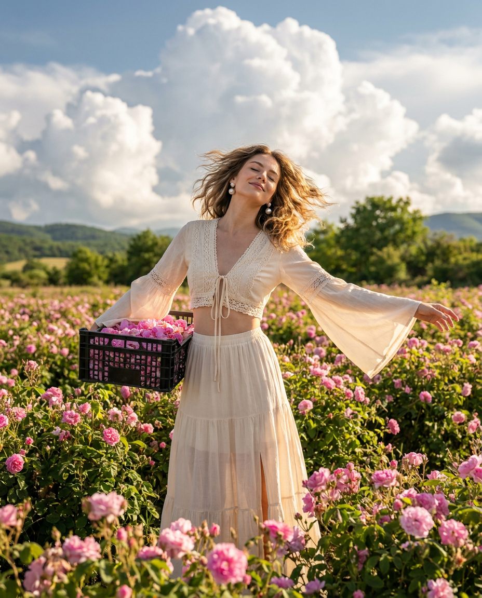
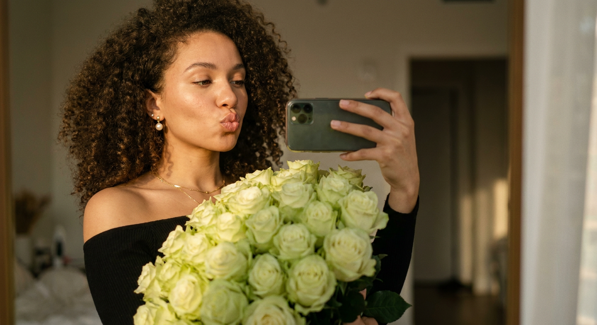
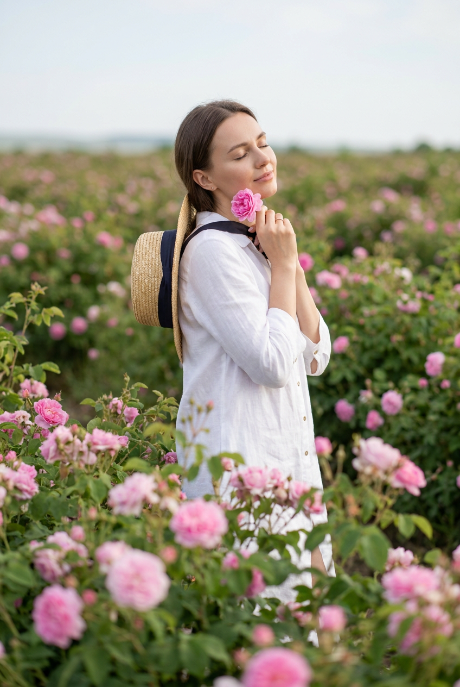
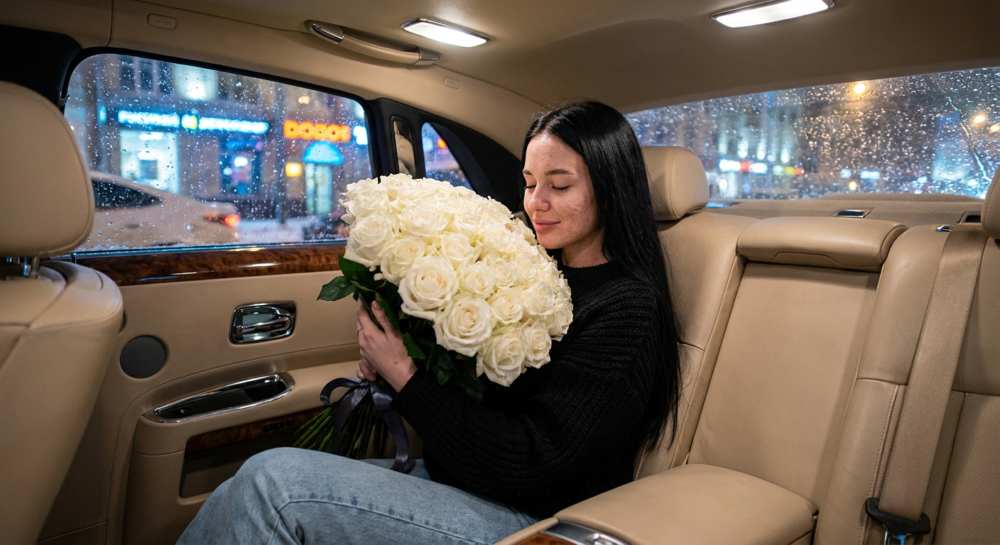
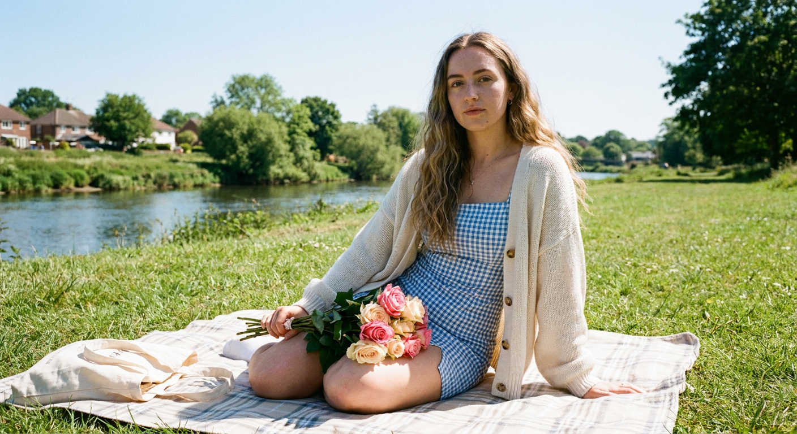
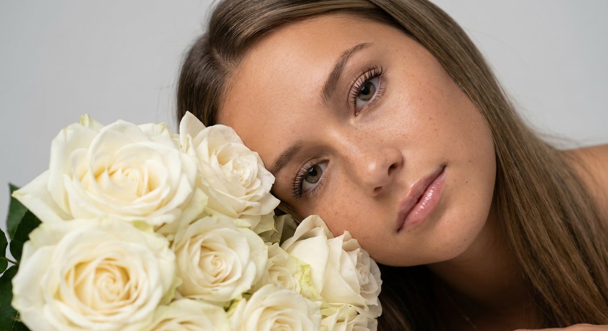
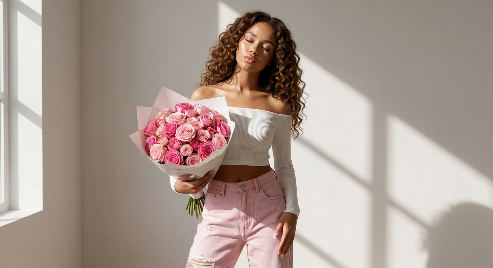
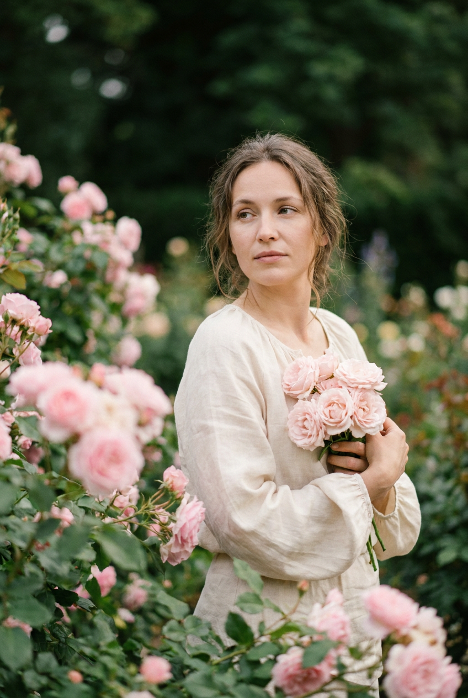
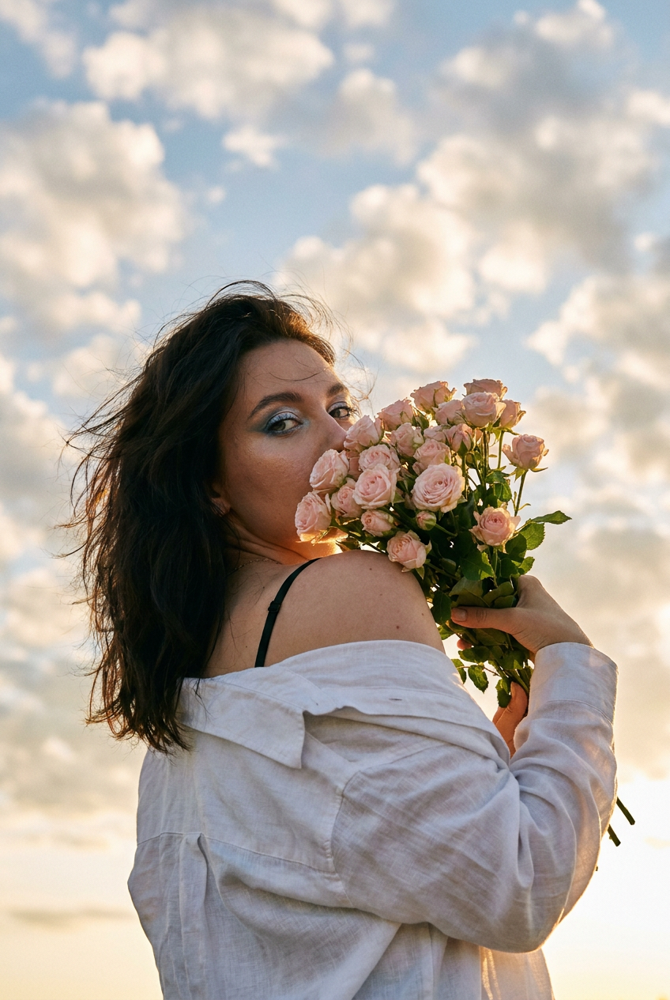
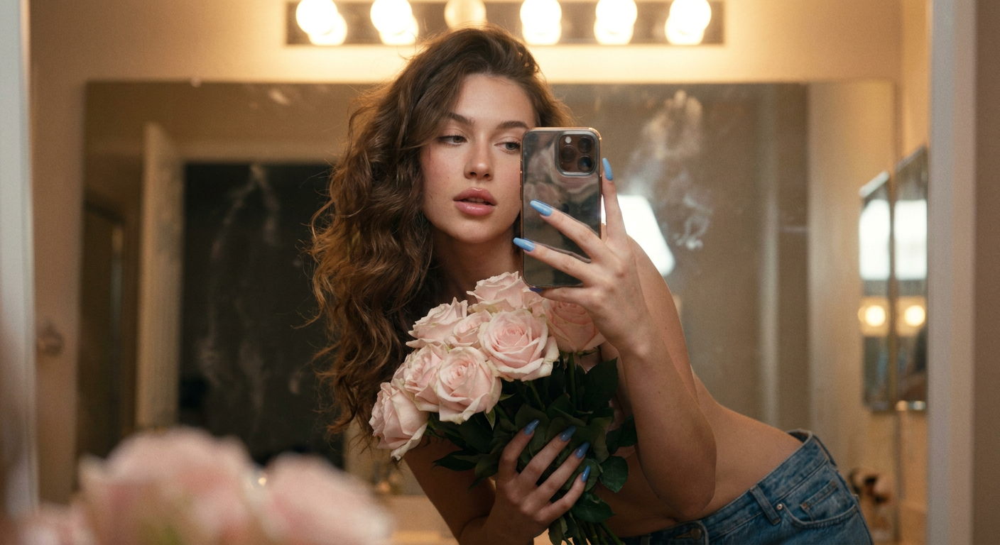

ИИ-фото с розами: 10 промптов для нейросети

Обычный снимок с цветами часто выглядит плоско: букет теряет форму, руки становятся неестественными, а лицо меняется до неузнаваемости. Генерация помогает собрать сцену заново — с нужной атмосферой, светом, одеждой и композицией.
В подборке — десять сценариев с розами: от модной съёмки на плантации и портрета в саду до зеркального селфи, кадра в салоне автомобиля и романтичной фотографии у реки. Каждый промпт можно использовать как основу и адаптировать под свой референс.
Как сгенерировать такое фото: пошагово
Нужен снимок анфас при ровном свете, лицо в кадре целиком, без тёмных очков и головных уборов. Разрешение от 1000 пикселей по короткой стороне. Чем чётче исходник, тем точнее модель повторит черты.
Выберите сценарий ниже и нажмите «Копировать» — текст уйдёт в буфер целиком, вместе с командой сохранения внешности. Эта команда стоит первой строкой и отвечает за то, чтобы на выходе было ваше лицо, а не случайное.
Кнопка «Сгенерировать» рядом с каждым промптом открывает модель в новой вкладке. Nano Banana Pro работает с референсом лица — в отличие от моделей, которые генерируют портрет с нуля и узнаваемость теряют.
Промпт — в поле ввода, портрет — через загрузку референса. Порядок значения не имеет, но без референса команда сохранения внешности работать не будет: модели нечего сохранять.
Для сторис и ленты берите 9:16, для превью и обложек — 4:3. Первый результат редко идеален: если поза или свет ушли не туда, поправьте соответствующую часть промпта и запустите заново. Обычно хватает двух-трёх итераций.
10 промптов для генерации
1. Съёмка среди дамасских роз
Строго сохранить внешность по загруженному референсу: черты лица, пропорции, мимику и текстуру кожи без изменений. Гиперреалистичная профессиональная lifestyle-fashion фотография в вертикальном формате 4:5. Молодая женщина европейской внешности, 23–28 лет, показана в полный рост по центру цветущего поля розовых кустов. Поза расслабленная, чувственная и аристократичная: корпус немного развёрнут к камере, одно бедро отведено в сторону, силуэт образует мягкую S-линию. Левая рука согнута и уходит назад-вниз, в ней большая чёрная пластиковая корзина-ящик, заполненная свежими лепестками и бутонами дамасских роз. Правая рука вытянута вбок и чуть отведена назад, длинный рукав эффектно развевается. Голова запрокинута и слегка повернута в сторону, подбородок поднят к небу, глаза закрыты. Натуральная кожа, реалистичная ткань, объёмные цветы, мягкий дневной свет, высокая детализация, fashion-съёмка.
2. Селфи с зелёными розами

Строго сохранить внешность по загруженному референсу: черты лица, пропорции, мимику и текстуру кожи без изменений. Фотореалистичный зеркальный селфи-портрет молодой женщины с объёмными кудрями. На ней чёрный топ с открытыми плечами, в ушах перламутровые серьги, на шее тонкая цепочка. Она держит огромный букет бледно-зелёных роз, а смартфон хорошо заметен в отражении зеркала. Губы сложены в лёгкую поцелуйную гримасу. Сцена освещена тёплым золотым светом часа перед закатом; кожа выглядит естественно, без пластиковой ретуши, на лепестках видны тонкие фактуры. Мягкая кинематографичная цветокоррекция, натуральные тени и блики, малая глубина резкости, нежное боке, объектив 35 мм, диафрагма f/1.8, высокое разрешение, реалистичная фотографическая стилизация.
3. Розовая плантация в глубине

Строго сохранить внешность по загруженному референсу: черты лица, пропорции, мимику и текстуру кожи без изменений. Вертикальная фотореалистичная fashion-фотография на большой плантации роз. Девушка стоит среди густых цветущих рядов, которые уходят вдаль и создают ощущение бесконечного сада. На переднем плане — крупные размытые розовые цветы, в средней зоне — насыщенные кусты, дальше открываются зелёная глубина и небо. Модель в полупрофиль, корпус слегка повёрнут, голова направлена в сторону и немного опущена; глаза закрыты или прикрыты, выражение спокойное, мечтательное и чувственное, губы расслаблены. Одна рука поднята и держит соломенную шляпу, другая свободно опущена. Лёгкая романтичная одежда, естественная поза, мягкий рассеянный свет, объёмная перспектива, малая глубина резкости, точная передача лица и пропорций, высокая детализация лепестков и зелени.
4. Белые розы в автомобиле

Строго сохранить внешность по загруженному референсу: черты лица, пропорции, мимику и текстуру кожи без изменений. Уютная романтичная фотография в салоне роскошного автомобиля вечером. Девушка с длинными прямыми волосами сидит на заднем сиденье в чёрном вязаном свитере и светло-голубых джинсах. Она прижимает к лицу огромный плотный букет белых роз, перевязанный лентой, закрывает глаза и вдыхает аромат цветов. В интерьере — бежевая кожа, деревянные вставки и хромированные ручки; тёплый свет плафонов смешивается с уличными огнями. За окном видны вечерний город, снег, подсвеченные здания и синие неоновые вывески, фон живописно размыт. Боковой ракурс немного сзади, девушка и букет в центре, детали салона обрамляют сцену. Живой кадр без фильтров и ретуши, видимая текстура кожи, RAW, Phase One IQ4, объектив 80 мм, f/2.8–f/4, смешанный баланс белого с тёплыми и зеленоватыми оттенками.
5. Букет на берегу реки

Строго сохранить внешность по загруженному референсу: черты лица, пропорции, мимику и текстуру кожи без изменений. Мягкий lifestyle-портрет молодой женщины, сидящей на светлом пледе на травянистом берегу реки в яркий солнечный день. Она расположилась на земле: одна нога согнута в колене и подтянута к телу, стопа стоит на траве или пледе, вторая нога расслабленно вытянута вперёд и скрыта под тканью платья. Корпус прямой, но не напряжённый, плечи слегка развёрнуты к камере. Одна рука лежит рядом с бедром ладонью вниз, другая бережно поддерживает букет роз на коленях и поверх платья, пальцы мягко обхватывают стебли. Голова немного наклонена вперёд, взгляд спокойный и уверенный, прямо в объектив. Длинные мягко слоистые волосы свободно лежат на плечах. Естественная кожа без ретуши, лёгкое летнее платье, светлая ткань пледа, зелёная трава, солнечные блики, натуральные тени, реалистичная фотографическая детализация.
6. Щека среди белых роз

Строго сохранить внешность по загруженному референсу: черты лица, пропорции, мимику и текстуру кожи без изменений. Крупный план молодой женщины с длинными прямыми волосами, лежащей на боку в расслабленной позе. Она нежно касается щекой пышного букета цветущих белых роз, который занимает значительную часть нижней половины кадра. Съёмка выполнена немного сверху, взгляд направлен прямо в объектив и создаёт ощущение личного зрительного контакта. У модели лёгкий загар, на переносице и щеках заметны деликатные веснушки, ресницы аккуратно накрашены, на губах прозрачный блеск с влажным сиянием. Мягкий рассеянный студийный свет подчёркивает объём лица и естественную текстуру кожи. Фон однотонный светло-серый, нейтральный. Очень малая глубина резкости: глаза и ближайшие лепестки резкие, дальние цветы растворяются в мягком боке. Фотореализм, натуральные пропорции, высокая детализация.
7. Контрастный портрет с букетом

Строго сохранить внешность по загруженному референсу: черты лица, пропорции, мимику и текстуру кожи без изменений. Профессиональный студийный портрет молодой женщины с длинными блестящими кудрями. Она держит большой букет нежно-розовых и насыщенно-розовых роз, завернутый в белую крафтовую бумагу. На модели белый рубчатый кроп-топ с открытыми плечами и светло-розовые рваные джинсы оверсайз с высокой талией; на ногтях французский маникюр. Голова слегка наклонена, глаза закрыты, губы расслабленно сложены в мягкую «уточку». Средний план, светлая комната и чистый нейтральный фон. Естественный, но драматичный источник создаёт резкие контрастные тени на стене и фигуре, при этом кожа подсвечена мягким светом и выглядит здоровой. Современная fashion-фотография, высокая детализация, фотореализм. Не использовать плоское освещение, пересветы на лице или цветах, провалы в тенях и искусственное сглаживание кожи.
8. Розы у груди в саду

Строго сохранить внешность по загруженному референсу: черты лица, пропорции, мимику и текстуру кожи без изменений. Фотореалистичный вертикальный портрет девушки в цветущем розовом саду. Она стоит среди густых кустов, снята в полупрофиль: корпус немного повёрнут вправо, лицо направлено влево, взгляд спокойный, мягкий и задумчивый, устремлён вдаль мимо камеры. Выражение тихое, нежное, почти медитативное, без улыбки, губы расслаблены. В руках модель держит свежие розовые цветы; букет или несколько крупных бутонов расположены близко к груди и в нижней левой части кадра. Пальцы естественно и аккуратно обхватывают стебли, кисти не напряжены. Часть цветов на переднем плане размыта и создаёт глубину, за моделью видны пышные розовые кусты. Мягкий естественный свет, романтичная атмосфера, натуральная кожа, реалистичная фактура лепестков, малая глубина резкости, точная передача мимики и пропорций.
9. Букет на фоне облаков

Строго сохранить внешность по загруженному референсу: черты лица, пропорции, мимику и текстуру кожи без изменений. Эстетичный мечтательный женский портрет на фоне открытого неба, вертикальная композиция 2:3 или 9:16. Камера почти лежит на земле и направлена вверх — extreme low angle shot. Девушка возвышается над объективом, её фигура уходит ввысь среди облаков, создавая чувство свободы и полёта. Она стоит спиной или почти спиной к камере, корпус вертикальный, ноги на ширине плеч, одна может быть немного выставлена вперёд. Голова слегка повёрнута в профиль: видны линия щеки, подбородок, один глаз, часть носа и губ. Поднятой к лицу рукой модель держит пышный букет нежно-розовых мелких роз — кустовых, spray-роз или пионовидных. Цветы частично закрывают лицо, оставляя открытым один глаз. Мягкий фокус, высокая детализация, воздушные облака, естественный свет, художественная фотография без изменения черт лица.
10. Селфи с розами у зеркала

Строго сохранить внешность по загруженному референсу: черты лица, пропорции, мимику и текстуру кожи без изменений. Крупный зеркальный селфи-портрет молодой женщины с букетом бледно-розовых роз. Атмосфера интимная и романтичная: сверху светят мягкие тёплые лампы гримёрного зеркала, на отражающей поверхности заметны лёгкие разводы. У модели натуральный макияж, слегка приоткрытые губы и объёмные волнистые каштановые волосы. Голубые длинные ногти выделяются на фоне букета, смартфон в чехле с отражающей поверхностью частично закрывает лицо. В образе — джинсы и открытый живот. Пастельная палитра, реалистичная текстура кожи и лепестков, малая глубина резкости, высокая детализация, кинематографичная тональная градация, мягкое плёночное зерно. Зеркало и телефон должны выглядеть физически правдоподобно, руки и пальцы — анатомически корректно, свет — тёплым, но без пересветов.
Что важно учесть в этом стиле
Розы должны быть частью композиции, а не случайным декором. Заранее задавайте их цвет, размер, количество и положение: букет у груди, цветы возле лица или кусты на переднем плане дают совершенно разное ощущение глубины.
Для портретов полезно отдельно описывать позу рук, направление взгляда и положение головы. Если нужен референс лица, добавляйте требования к естественной мимике, пропорциям и текстуре кожи, но не перегружайте один абзац десятками взаимоисключающих указаний.
Идеи для вариаций
- Замените розовый сад на оранжерею с запотевшими стёклами.
- Добавьте дождевые капли на лепестки и влажные пряди волос.
- Сделайте съёмку на рассвете с холодным голубым контровым светом.
- Попросите бордовые розы, кремовую винтажную одежду и плёночную фактуру.
- Перенесите сцену на балкон с видом на старый город.
- Используйте один крупный бутон вместо букета для минималистичного портрета.
Как собрать свой промпт
Сначала укажите тип кадра и формат: крупный план, полный рост, вертикальный 4:5 или 9:16. Затем опишите модель, одежду, позу и действие с цветами. После этого добавьте локацию, фон, время суток и характер света.
В финале задайте технику съёмки: объектив, диафрагму, глубину резкости, степень размытия и качество кожи. Для сложных сцен полезно разделять промпт на короткие смысловые блоки и запускать 3–5 вариантов, меняя только одну деталь за попытку.
Ошибки, из-за которых кадр не получается
- Слишком общий букет. Без цвета, размера и положения розы превращаются в бесформенное пятно.
- Нет описания рук. Нейросеть часто создаёт лишние пальцы, неестественные кисти и перепутанные стебли.
- Конфликт света. Не сочетайте жёсткий полуденный солнечный свет с мягким студийным без пояснения, откуда идут источники.
- Перегруженный фон. Множество деталей конкурирует с лицом, поэтому для портрета лучше оставить одну доминирующую локацию.
- Слишком сильная ретушь. Формулировки про фарфоровую кожу и идеальную гладкость убирают поры, веснушки и живую фактуру.
- Неправильный формат. Для полного роста и высоких букетов заранее задавайте вертикальное соотношение сторон.
Частые вопросы
Как сделать такое ИИ-фото бесплатно?
Можно попробовать Kandinsky и Шедеврум: у них есть бесплатная генерация, но число попыток, скорость и доступ к функциям меняются. Krea AI и Arena.ai удобны для экспериментов, однако бесплатный режим обычно ограничивает очередь, разрешение или количество генераций. Работа с референсом лица поддерживается не одинаково: результат может заметно менять черты, поэтому понадобится несколько итераций и аккуратное описание внешности.
Как сохранить лицо с фотографии-референса?
Загрузите чёткий снимок без сильных фильтров, задайте прямой ракурс и отдельно опишите, что нужно сохранить: форму глаз, носа, губ, овал лица и пропорции. Если сервис позволяет менять силу влияния референса, начните со среднего значения. Слишком сильная привязка часто портит позу и руки, а слишком слабая — меняет внешность.
Почему розы выглядят пластиковыми?
Добавьте фактуру лепестков, естественные неровности, мягкие тени между бутонами и конкретный источник света. Помогают указания на реалистичные капли воды, видимые прожилки, разную степень раскрытия цветов и фотографическую глубину резкости. Не смешивайте фотореализм с чрезмерно глянцевыми словами вроде «идеальные» и «безупречные».
Как избежать лишних пальцев и кривого букета?
Опишите положение каждой руки, направление кистей и то, как пальцы держат стебли или корзину. Не просите одновременно сложный жест, телефон и большой букет, если модель небольшая в кадре. После генерации используйте дорисовку отдельных зон или перезапустите сцену с более простой позой.